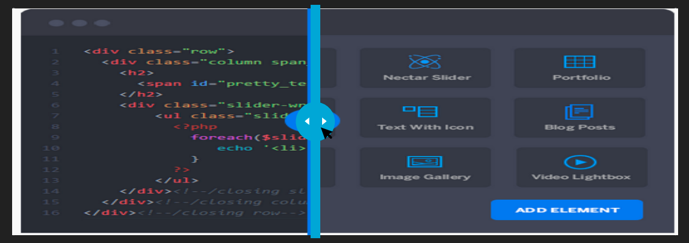

We invest in your ideas
WHAT
IS 10x?
10x invests in products and services that possess groundbreaking ideas or
technology with the potential for significant return on investment. We’re aiming for 10
times the value of the initial investment to the federal government or the American
public, measured through cost savings, improved efficiencies, or scale of impact.
10x funds products and services that scale widely or affect a significant portion of the
U.S. population, whether or not the projects are cost-recoverable. Our approach is
based on modern venture capital practices and is designed to spend fewer taxpayer
dollars while also ensuring that the best products and services get funded.
HOW IS
10x DIFFERENT?
In contrast to traditional government project funding approaches, the 10x program takes an iterative approach to funding projects to minimize risks and save money.
Reserve this space for scroll bar/JavaScript nightmare
THE TRADITIONAL WAY
- Government technology budget specifies a lump sum of money for a project to be spent over a period of months or years.
- Can result in spending money on projects that shouldn't continue because the budget already exists.
- Large up-front investments can be made on unproven ideas.
VS
THE 10x WAY
- 10x spends the smallest amount of funding necessary at each stage of a project to determine if it's worth pursuing.
- Only 10-20% of projects selected for funding will move into design and development work.
- Iterative funding approach saves the government money while ensuring that the products and services funded meet a real, verifiable need in the federal marketplace.
Want to learn more about the 10x
funding and selection process?
10x